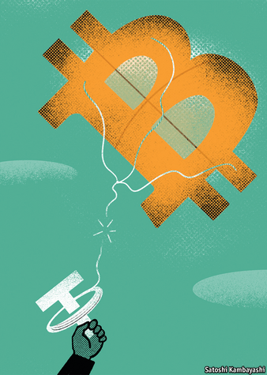

2021-03-09T10:17:44+00:00
加密货币
扯断引线
一款稳定币如今被指名不副实。加密货币市场更添不安

是健康回调，还是加密货币崩盘的迹象开始显现？在以特斯拉为首的多家大公司和投资者表露出自己开始认真看待加密货币之后，2月21日比特币创下超过58,000美元的新高，比年初的价格翻了一倍。但两天内又暴跌超过五分之一（之后略有回升），刺痛了被称为“囤币党”（HODLer）的比特币死忠粉的神经。下跌的一个导火索是特斯拉的老板、比特币“拉拉队长”马斯克认为比特币的价格“显得高了”。作为加密货币市场不可或缺的一部分，泰达币（Tether）被美国监管机构盯上的消息更是无助于安抚这些死忠粉。
泰达币是所谓的“稳定币”。发行它的同名公司一直宣称泰达币（共有超过340亿枚在流通中）受美元1比1支持。据信这种挂钩的一大优势是波动性低；相比之下，比特币的价格是出了名地起伏不定。还有一个好处是，稳定币与普通货币的兑换更加容易。
对于泰达自称是一种数字美元的说法，人们一直心存疑虑。批评者说，所谓受美元1比1支持似乎并不靠谱。他们还怀疑泰达币已被用于操纵比特币，尤其是在加密币交易所Bitfinex里。这个交易所由一些泰达币的持有者拥有。一项学术研究发现，使用泰达币买入比特币都是“在市场走低时发生，并推动比特币价格显著上涨”。一个相关的担忧是泰达币的所有者对供应的控制程度。比特币只有固定数量可供“挖矿”，但泰达币可随意发行，意味着这款稳定币的发行者拥有中央银行那样的印钞权。
越来越多的疑虑促使调查人员介入。纽约州总检察长莱蒂西亚·詹姆斯（Letitia James）花了两年时间揭开泰达公司的不透明操作及其与Bitfinex的关系。2月23日，她指控这两家公司“欺诈”，对它们罚款1850万美元，并责令它们停止在纽约州的所有交易活动。Bitfinex和泰达公司则表示“不承认存在不当行为”。
詹姆斯的控罪书杀伤力很强。她说，泰达谎报了美元储备。该公司在废止了一项外部审计后开展的“自称的审核”被指弄虚作假。调查认为，表面上用于支持泰达币的现金储备是审核当天的早上才存入的，其中一部分在审核后随即被转移至别处。此外，Bitfinex没有坦白披露数亿美元是怎样从据称位于巴拿马的第三方支付处理机构中消失的。这位总检察长表示，在被问及时，Bitfinex谎称知道这些钱的去向。作为和解条件之一，Bitfinex和泰达公司已同意提交强制性报告。
这将确保加密货币世界里一处大得惊人的“暗角”被照亮。虽然泰达币远不如比特币那样家喻户晓，但它的影响力已经得到了极大扩张。最近一项分析发现，在Binance、Bit-Z和HitBTC等多个加密货币交易所，大部分比特币都是使用泰达币购入的。(相比之下，即将上市的交易所Coinbase规模较小但更透明，这里的比特币交易大多以美元、欧元和英镑支付)。
这项分析称，在它观察的24小时内，通过加密货币交易所买入的所有比特币中，超过三分之二是用泰达币支付的。这也就是说，泰达币所占的份额已远不止市场一角。事实上，泰达币的疯狂发行（据说曾单日发行数亿枚）已引发笑话：在一个流行表情包中，一辆印有泰达币标志的装甲运钞车飞驰而过，大把钱币从敞开的后门倾泻而出。
这就是为什么纽约州调查的结果（加上有关其他调查的报道、监管部门打击不透明交易的传言日盛，以及该市场近期的波动）很可能会令许多押注这个价值1.4万亿美元的加密货币市场的人焦灼不安。摩根大通的策略师在最近一份简报中总结了其中的风险：“如果出现任何问题影响到国内外投资者使用泰达币的意愿或能力，最可能的后果就是加密货币市场全面遭受严重的流动性冲击。”对很多人来说，一个扯断了泰达币这根“风筝引线”的市场将是可怕的。
2021-03-09T10:17:44+00:00
Cryptocurrencies
UnTethered
A stablecoin is branded anything but, adding to jitters in crypto-markets
A HEALTHY CORRECTION, or the first signs of a crypto-crash? On February 21st bitcoin hit a new high of more than $58,000, double its price at the start of the year, after several big firms and investors, led by Tesla, signalled that they were starting to take the cryptocurrency seriously. Within two days, though, the price had tumbled by over a fifth (before recovering slightly), jangling the nerves of HODLers, as bitcoin diehards are known. A trigger for the fall was Elon Musk, Tesla’s boss and bitcoin’s cheerleader-in-chief, musing that its price “seems high”. The news that Tether, an integral component of crypto-markets, had fallen foul of American regulators hardly helped calm the faithful.
Tether is a so-called stablecoin. Its issuer, a company of the same name, has long claimed that Tethers—of which more than 34bn are in circulation—are backed one-to-one by dollars. One purported advantage of such pegging is lower volatility; bitcoin’s price, by contrast, is notoriously erratic. Another is that stablecoins make it easier to move between cryptocurrencies and the ordinary sort.
Doubts have long swirled around Tether’s claim to be a sort of digital dollar. Critics say the one-to-one-backing claim looks flaky. They also suspect that Tether has been used—not least on Bitfinex, a cryptocurrency exchange owned by some of the same people—to manipulate bitcoin; one academic study found that purchases with Tether were “timed following market downturns and result in sizeable increases in bitcoin prices”. A related concern is the degree of control that Tether’s owners have over supply. Whereas only a fixed number of bitcoin are available to be “mined”, Tethers can be issued at will, giving those behind the stablecoin central-bank-like printing powers.
The growing queasiness spurred investigators on. New York’s attorney-general, Letitia James, has spent two years unpicking Tether’s opaque operations and its relationship with Bitfinex. On February 23rd she branded the firms “fraudulent”, fined them $18.5m and ordered them to end trading activity with New Yorkers. Bitfinex and Tether said they “admit no wrongdoing”.
Ms James’s charge-sheet is damning. Tether, she says, lied about its dollar backing. Its “self-proclaimed verification”—after an external audit had been abandoned—was allegedly a sham: the cash ostensibly backing the Tethers had been put there that morning, the probe concluded, and some of it was moved elsewhere soon after. Moreover, Bitfinex was not upfront about hundreds of millions of dollars that went missing through a third-party payments processor reportedly based in Panama. The attorney-general says Bitfinex falsely claimed it knew where all the money was when questioned about it. As part of the settlement, Bitfinex and Tether have agreed to submit to mandatory reporting.
This will ensure a light is shone on a dark but surprisingly large part of the cryptocurrency world. Though Tether is nowhere near as much of a household name as bitcoin, its influence has grown enormously. A recent analysis found that the majority of bitcoin purchases on several crypto-exchanges, including Binance, Bit-Z and HitBTC, are made using Tether. (By contrast, on Coinbase, a smaller but more transparent exchange that is soon to list on the stockmarket, they are mostly paid for with dollars, euros and sterling.)
According to the analysis, more than two-thirds of all bitcoin bought on all crypto-exchanges in one 24-hour period studied were purchased with Tether. In other words, Tether makes up far more than just a corner of the market. Indeed, its rampant minting—hundreds of millions were reportedly once pumped out in a single day—has led to jokes: in one popular meme, an armoured truck sporting the Tether logo hurtles by, money billowing out of its open rear door.
That is why the outcome of the New York investigation—along with reports of other probes, growing talk of a regulatory crackdown on opaque trading, and the market’s latest wobbles—is likely to make many punters in the $1.4trn cryptocurrency market nervous. Strategists at JPMorgan Chase, a bank, summed up the risk in a recent note: “Were any issues to arise that could affect the willingness or ability of both domestic and foreign investors to use Tether, the most likely result would be a severe liquidity shock to the broader cryptocurrency market.” An unTethered market is a scary prospect for many. ■
2021-03-09T10:17:44+00:00
加密貨幣
扯斷引線
一款穩定幣如今被指名不副實。加密貨幣市場更添不安
是健康回調，還是加密貨幣崩盤的跡象開始顯現？在以特斯拉為首的多家大公司和投資者表露出自己開始認真看待加密貨幣之後，2月21日比特幣創下超過58,000美元的新高，比年初的價格翻了一倍。但兩天內又暴跌超過五分之一（之後略有回升），刺痛了被稱為“囤幣黨”（HODLer）的比特幣死忠粉的神經。下跌的一個導火索是特斯拉的老闆、比特幣“拉拉隊長”馬斯克認為比特幣的價格“顯得高了”。作為加密貨幣市場不可或缺的一部分，泰達幣（Tether）被美國監管機構盯上的消息更是無助於安撫這些死忠粉。
泰達幣是所謂的“穩定幣”。發行它的同名公司一直宣稱泰達幣（共有超過340億枚在流通中）受美元1比1支持。據信這種掛鉤的一大優勢是波動性低；相比之下，比特幣的價格是出了名地起伏不定。還有一個好處是，穩定幣與普通貨幣的兌換更加容易。
對於泰達自稱是一種數字美元的說法，人們一直心存疑慮。批評者說，所謂受美元1比1支持似乎並不靠譜。他們還懷疑泰達幣已被用於操縱比特幣，尤其是在加密幣交易所Bitfinex里。這個交易所由一些泰達幣的持有者擁有。一項學術研究發現，使用泰達幣買入比特幣都是“在市場走低時發生，並推動比特幣價格顯著上漲”。一個相關的擔憂是泰達幣的所有者對供應的控制程度。比特幣只有固定數量可供“挖礦”，但泰達幣可隨意發行，意味着這款穩定幣的發行者擁有中央銀行那樣的印鈔權。
越來越多的疑慮促使調查人員介入。紐約州總檢察長萊蒂西亞·詹姆斯（Letitia James）花了兩年時間揭開泰達公司的不透明操作及其與Bitfinex的關係。2月23日，她指控這兩家公司“欺詐”，對它們罰款1850萬美元，並責令它們停止在紐約州的所有交易活動。Bitfinex和泰達公司則表示“不承認存在不當行為”。
詹姆斯的控罪書殺傷力很強。她說，泰達謊報了美元儲備。該公司在廢止了一項外部審計後開展的“自稱的審核”被指弄虛作假。調查認為，表面上用於支持泰達幣的現金儲備是審核當天的早上才存入的，其中一部分在審核後隨即被轉移至別處。此外，Bitfinex沒有坦白披露數億美元是怎樣從據稱位於巴拿馬的第三方支付處理機構中消失的。這位總檢察長表示，在被問及時，Bitfinex謊稱知道這些錢的去向。作為和解條件之一，Bitfinex和泰達公司已同意提交強制性報告。
這將確保加密貨幣世界裡一處大得驚人的“暗角”被照亮。雖然泰達幣遠不如比特幣那樣家喻戶曉，但它的影響力已經得到了極大擴張。最近一項分析發現，在Binance、Bit-Z和HitBTC等多個加密貨幣交易所，大部分比特幣都是使用泰達幣購入的。(相比之下，即將上市的交易所Coinbase規模較小但更透明，這裡的比特幣交易大多以美元、歐元和英鎊支付)。
這項分析稱，在它觀察的24小時內，通過加密貨幣交易所買入的所有比特幣中，超過三分之二是用泰達幣支付的。這也就是說，泰達幣所佔的份額已遠不止市場一角。事實上，泰達幣的瘋狂發行（據說曾單日發行數億枚）已引發笑話：在一個流行表情包中，一輛印有泰達幣標誌的裝甲運鈔車飛馳而過，大把錢幣從敞開的後門傾瀉而出。
這就是為什麼紐約州調查的結果（加上有關其他調查的報道、監管部門打擊不透明交易的傳言日盛，以及該市場近期的波動）很可能會令許多押注這個價值1.4萬億美元的加密貨幣市場的人焦灼不安。摩根大通的策略師在最近一份簡報中總結了其中的風險：“如果出現任何問題影響到國內外投資者使用泰達幣的意願或能力，最可能的後果就是加密貨幣市場全面遭受嚴重的流動性衝擊。”對很多人來說，一個扯斷了泰達幣這根“風箏引線”的市場將是可怕的。